المطلوب منك
- حدّد لكل فرد في فريقك المشروعات التي يعمل بها — من التطبيق على الهاتف أو من الكمبيوتر (الخطوات ١ و٢).
- وأنت نفسك: سجّل حضورك في المشروع الذي تعمل به كلما كنت في موقع مشروع (الخطوة ٣).
لماذا؟ يُحتسب وقت كل موظف على المشروع الصحيح (تكلفة المشروعات وبدل المشروعات)، ويختار الموظف مشروعه من قائمة قصيرة بدلاً من البحث بين كل المشروعات.
مهم: الموظف الذي حددت له مشروعات يسجّل الحضور في هذه المشروعات فقط. الموظف بدون مشروعات يمكنه التسجيل في أي مشروع. التعديل يُطبَّق فوراً. إذا عمل الموظف في المكتب وليس في مشروع، يسجّل حضوره كالمعتاد بدون مشروع.
١ تحديد مشروعات فريقك من الهاتف
- افتح تطبيق بتروكيما واضغط تبويب ✅ الموافقات في أسفل الشاشة.
- انزل إلى بطاقة مشروعات فريقك. أمام كل موظف عدد مشروعاته، أو «بدون مشروعات — يسجّل في أي مشروع».
- اضغط إدارة أمام الموظف.
- في خانة البحث اكتب حرفين على الأقل من كود المشروع أو اسمه، ثم اضغط على المشروع (+) لإضافته. أضف كل المشروعات التي يعمل بها.
- لإزالة مشروع لم يعد يعمل به اضغط ✕ واكتب السبب (مطلوب).
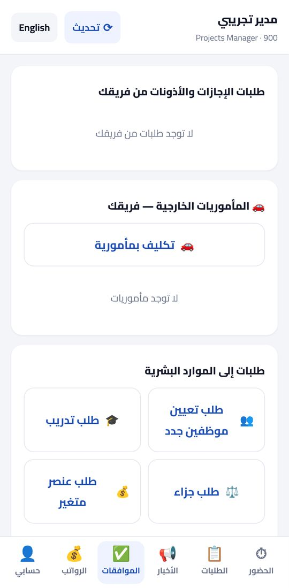
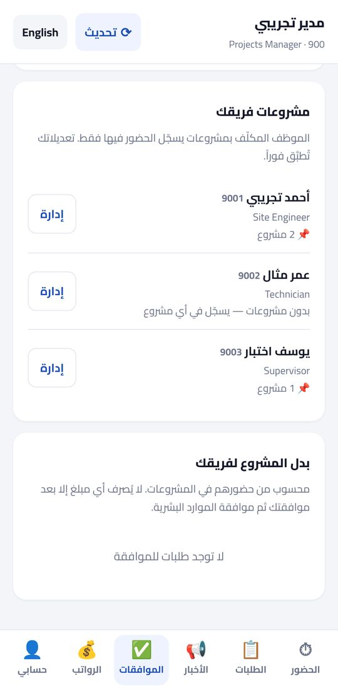
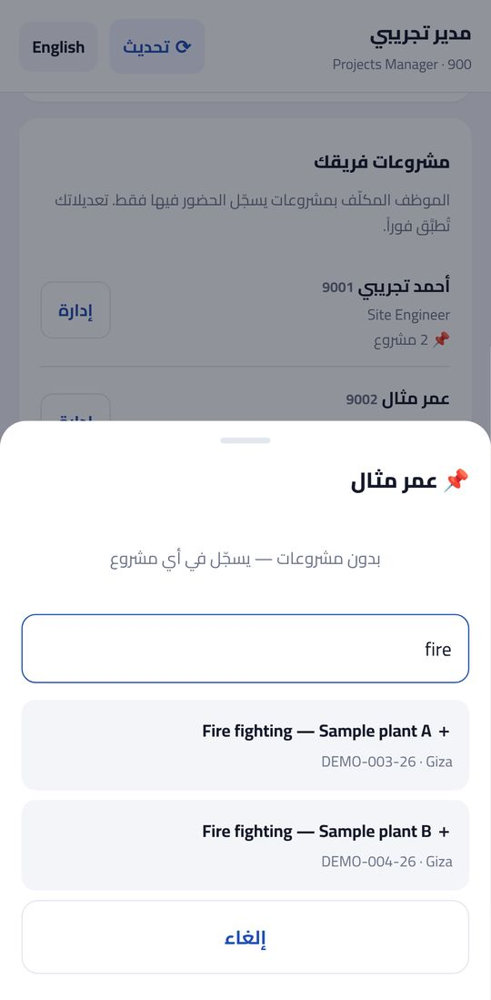
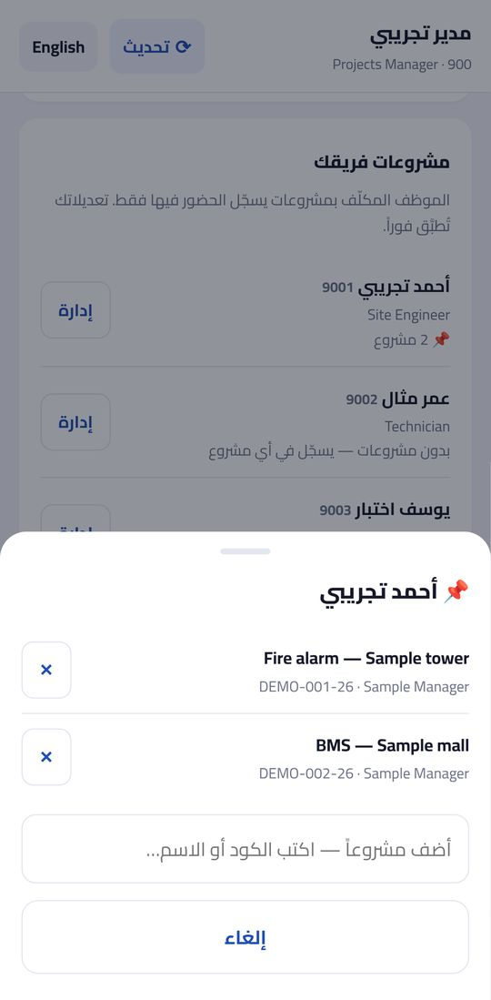
٢ تحديد مشروعات فريقك من الكمبيوتر
- افتح hr.petrokima-hr.com وسجّل الدخول بكودك وكلمة المرور.
- إذا فُتح لك تطبيق الموارد البشرية الكامل، اضغط 🙋 Me أعلى يمين الشاشة.
- اضغط ✅ Team approvals في القائمة العلوية، ثم انزل إلى بطاقة Your team's projects.
- اضغط Manage أمام الموظف، واكتب حرفين على الأقل في خانة Add a project، ثم اضغط + Add.
- للإزالة اضغط ⊘ أمام المشروع واكتب السبب.
- لفريق كبير: اضغط ⬇ Template لتنزيل ملف Excel (فيه ورقة بأكواد فريقك)، املأ كود الموظف وكود المشروع في كل سطر، ثم ⬆ Bulk upload. يعرض التطبيق نتيجة فحص كل سطر، ثم اضغط Save.
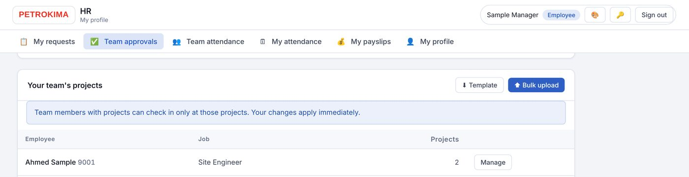
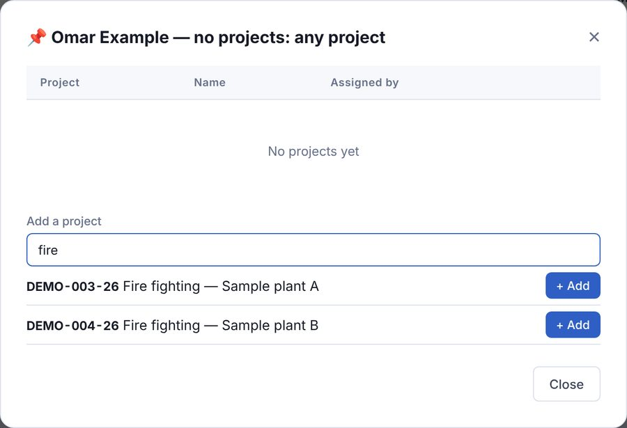
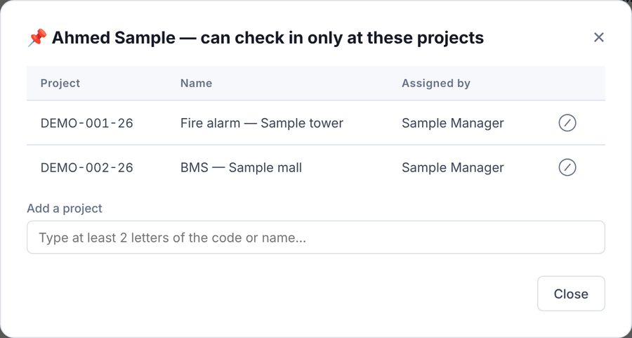
٣ تسجيل حضورك في مشروع (لك ولفريقك)
- في تبويب ⏱ الحضور اضغط ▶ تسجيل حضور.
- تظهر نافذة «أين تعمل الآن؟»: اختر المشروع من مشروعاتك أو المواقع الأخيرة.
- إذا لم يكن المشروع في القائمة، اكتب كوده أو اسمه في خانة البحث واختره.
- اضغط الزر الأخضر تسجيل الحضور في …. يُسجَّل الوقت من خادم الشركة وموقعك مع كل تسجيل.
- إذا انتقلت إلى مشروع آخر في نفس اليوم اضغط تغيير الموقع واختر المشروع الجديد.
إذا ظهرت رسالة «أنت غير مكلّف بهذا المشروع» فاطلب من مديرك المباشر إضافته لك (الخطوة ١ أو ٢).
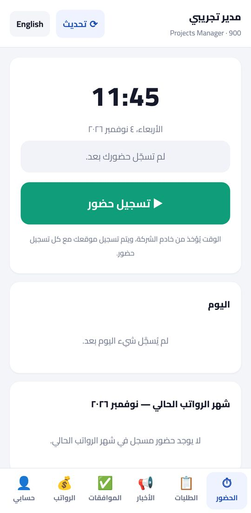
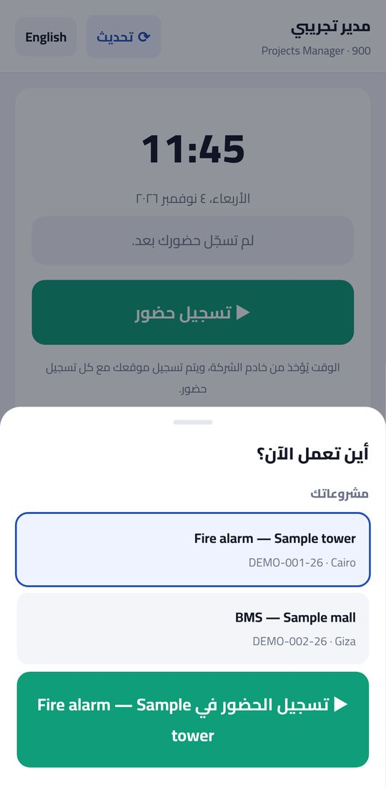
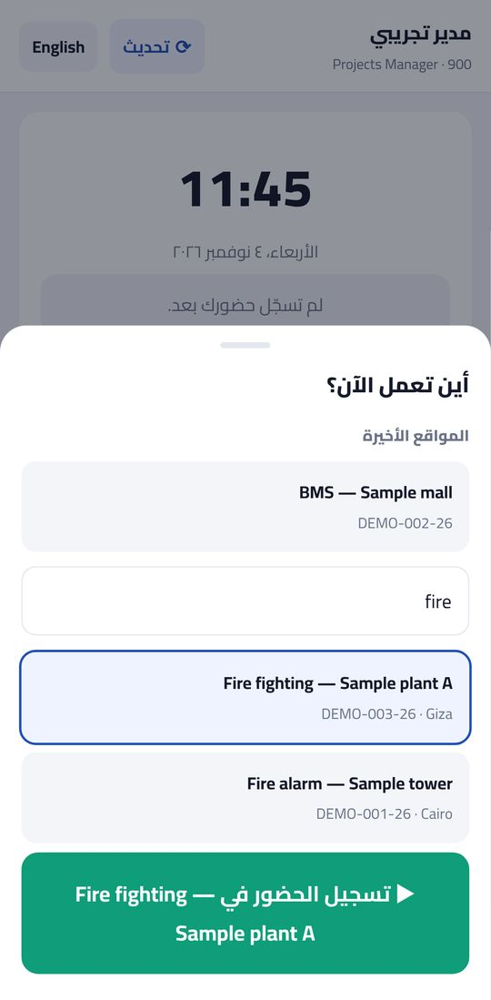
إذا لم تستطع الدخول
تواصل مع إدارة الموارد البشرية لتفعيل حسابك أو إعادة تعيين كلمة المرور. لتنزيل تطبيق أندرويد: download.petrokima-hr.com — ولهواتف آيفون افتح app.petrokima-hr.com في Safari ثم «إضافة إلى الشاشة الرئيسية».
What we ask you to do
- Give each member of your team the projects he or she works at — in the phone app or on the computer (steps 1 and 2).
- Yourself: check in at your project whenever you are at a project site (step 3).
Why? Everyone's time is booked to the right project (project costs and project allowances), and staff pick their project from a short list instead of searching all projects.
Important: a team member who has projects can check in only at those projects. A member with no projects can check in at any project. Changes apply immediately. When someone works at the office and not at a project, they check in as usual, without a project.
1 Your team's projects — on the phone
- Open the Petrokima app and tap the ✅ Approvals tab at the bottom.
- Scroll to the Your team's projects card. Each person shows how many projects he has, or "No projects — can check in at any project".
- Tap Manage next to the person.
- In the search box type at least 2 letters of the project code or name, then tap the project (+) to add it. Add every project he works at.
- To remove a project he no longer works at, tap ✕ and write the reason (required).
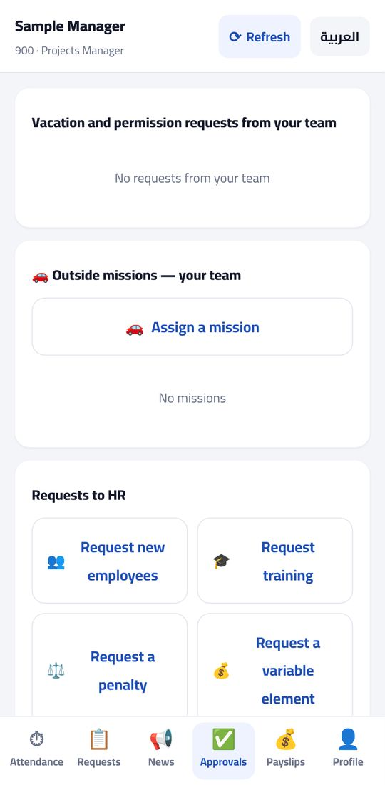
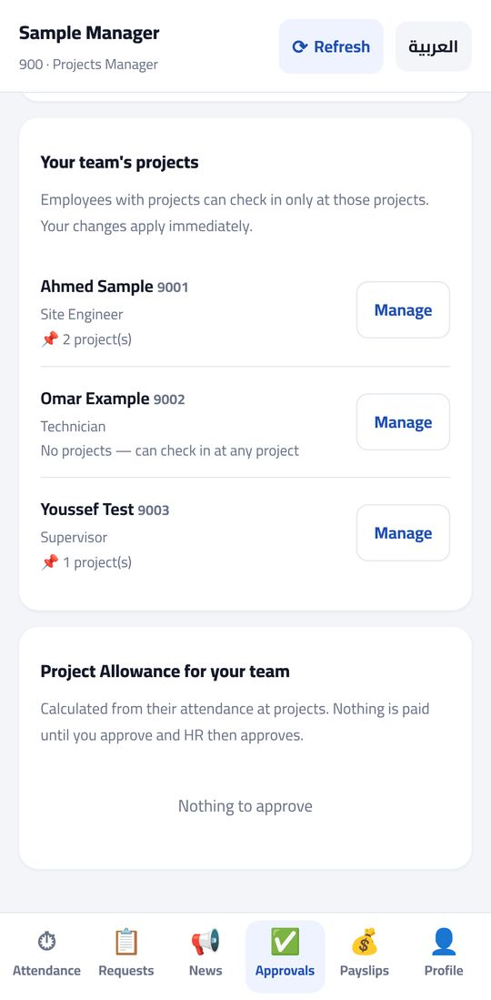
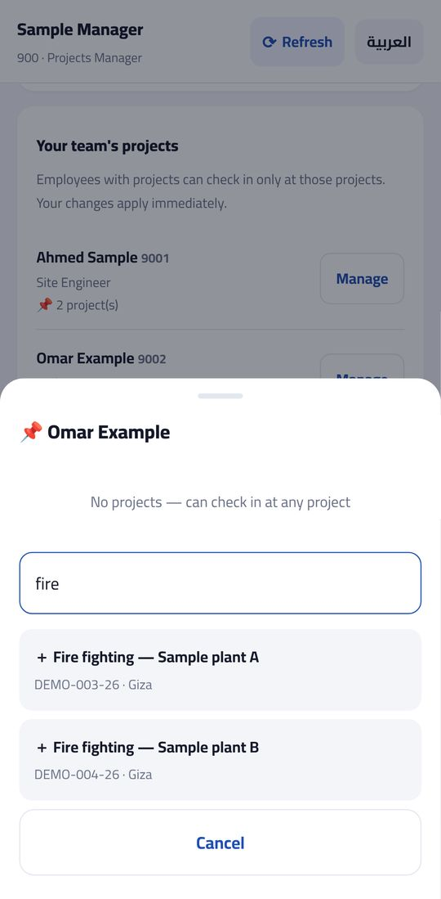
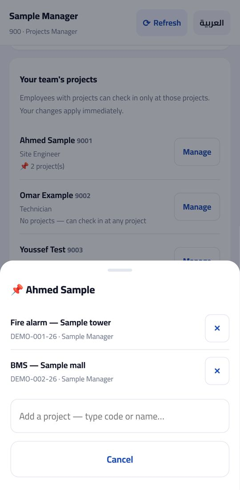
2 Your team's projects — on the computer
- Open hr.petrokima-hr.com and sign in with your code and password.
- If the full HR app opens for you, click 🙋 Me at the top right.
- Click ✅ Team approvals in the top menu, then scroll to the Your team's projects card.
- Click Manage next to the person, type at least 2 letters in Add a project, then click + Add.
- To remove one, click ⊘ next to the project and write the reason.
- For a large team: click ⬇ Template to download an Excel file (it has a sheet with your team's codes), fill one line per employee code + project code, then ⬆ Bulk upload. The app shows the check of every line; then click Save.
3 Checking in at a project (you and your team)
- On the ⏱ Attendance tab tap ▶ Check in.
- The "Where are you working?" window opens: pick the project under Your projects or Recent sites.
- If the project is not listed, type its code or name in the search box and pick it.
- Tap the green Check in at … button. The time comes from the company server; your location is recorded with each check-in.
- Moving to another project the same day? Tap Switch site and pick the new project.
If you see "You are not assigned to this project", ask your direct manager to add it for you (step 1 or 2).
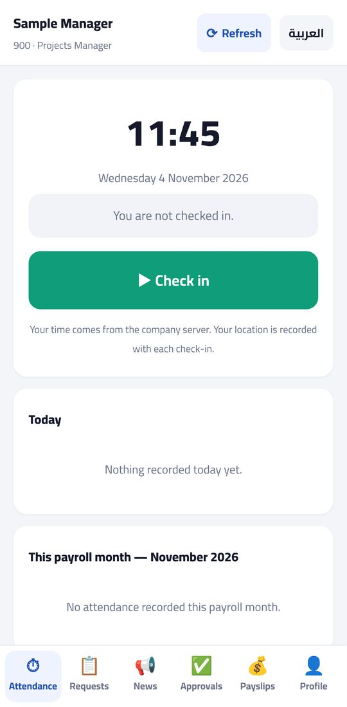
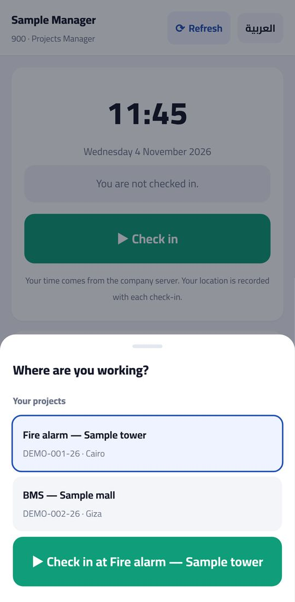
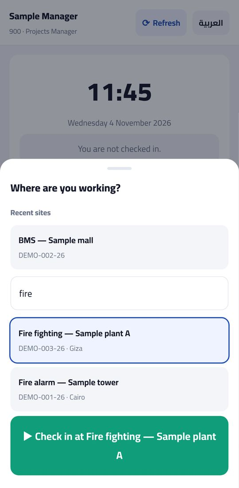
If you cannot sign in
Contact the HR department to activate your account or reset your password. Android app: download.petrokima-hr.com — on an iPhone open app.petrokima-hr.com in Safari, then "Add to Home Screen".